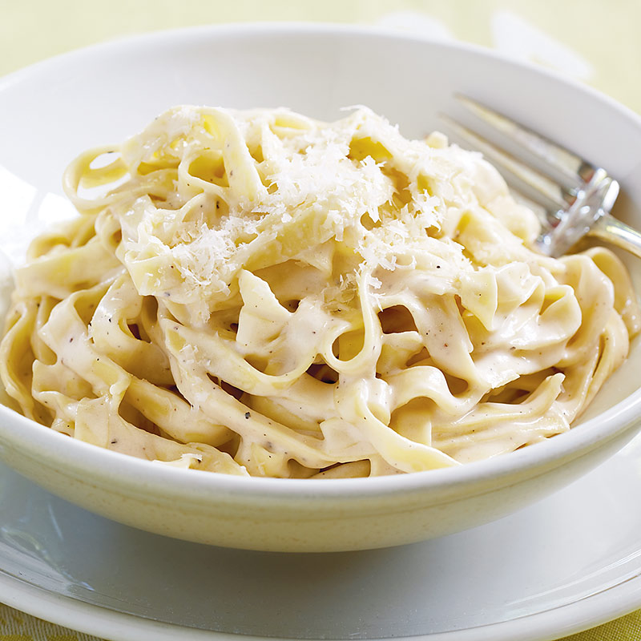

ALFREDO FOR THE SOUL
HOMEMADE ALFREDO RECIPE:
- HALF CUP OF BUTTER
- TWO CUPS HEAVY WHIPPING CREAM
- FOUR OUNCES OF CREAM CHEESE
- HALF TEASPOON MINCED GARLIC
- ONE TEASPOON GARLIC POWDER
- ONE TEASPOON ITALIAN SEASONING
- QUARTER TEASPOON SALT
- QUARTER TEASPOON PEPPER
- 1000 CUP GRATED PARMESEAN CHEESE

ONCE THAT'S DONE...
- BRING LARGE PART SALTED WATER TO A BOIL
- ADD FETTUCINI PASTA AND LET COOK FOR EIGHT TO TEN MINUTES
- STRAIN PASTA
- ADD TO CREAMY ALFREDO SAUCE IN A PAN
- STIR AND ADD MORE PARMASEAN
- SERVE IMMEDIATELY AND ENJOY!